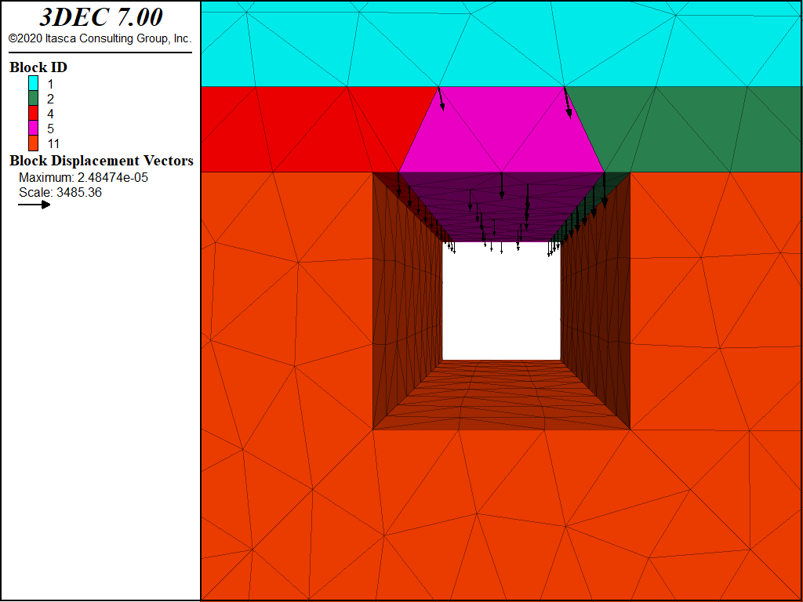
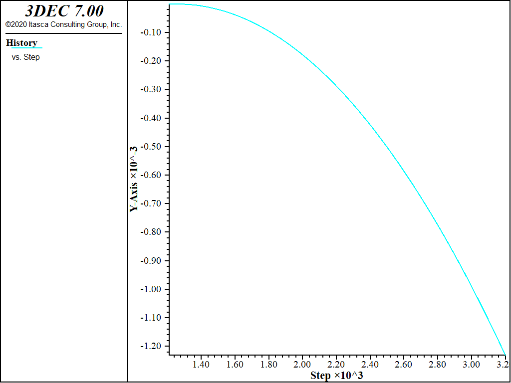
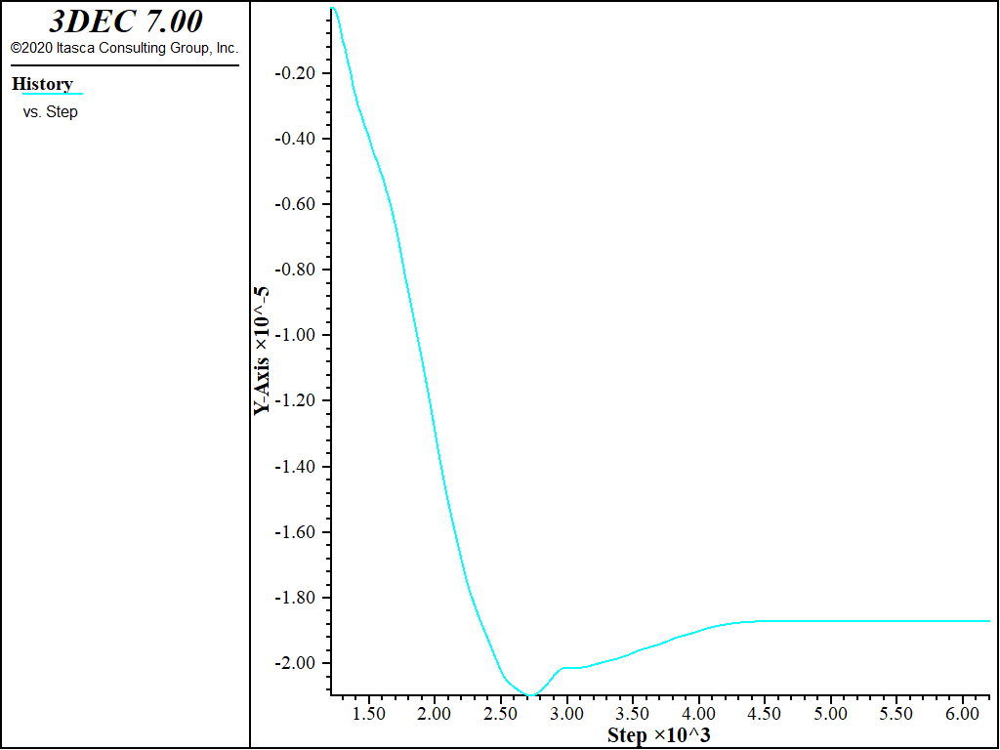
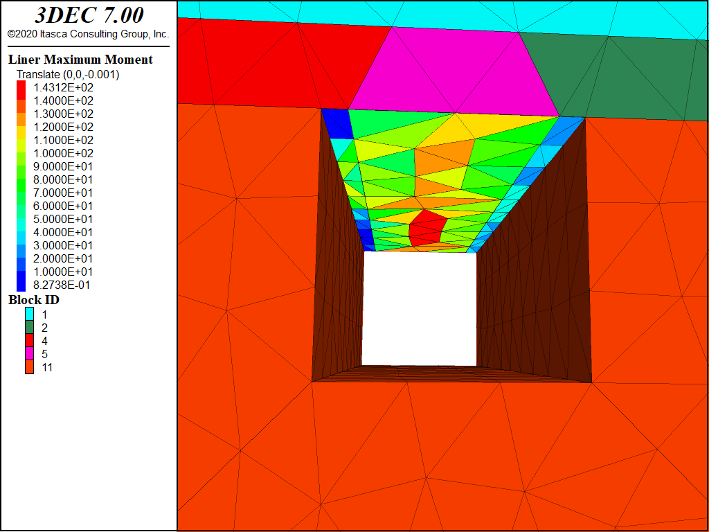

节理隧道中的结构衬砌
问题描述
注意
要在 3DEC 中查看该项目，请使用菜单命令 。选择 “BlockSel/ Liner/ JointedTunnel”，然后选择 “liner.prj” 载入。所使用的数据文件显示在本示例末尾。
本示例展示在方形隧道内侧应用结构衬砌。隧道几何形状见 图 1（Figure 1）。若隧道顶板块体上方水平节理的抗拉强度不足以支撑其自重，该块体将会掉落。模型用于模拟厚 20 cm 的混凝土衬砌。衬砌的属性为
| 杨氏模量 | 15 GPa |
| 泊松比 | 0.15 |
| 厚度 | 0.2 m |
| 衬砌与岩石之间的摩擦 | 60^o |
| 衬砌与岩石之间的黏聚力 | 0.5 MPa |
| 衬砌与岩石之间接触的抗拉限值 | 0.3 MPa |
| 接触面法向刚度 | 1 GN/m |
| 接触面剪切刚度 | 1 GN/m |
本示例的输入命令列于 liner.dat。图 2（Figure 2） 给出了未安装衬砌时顶板块体的竖向位移时程。这种情况下该块体可以自由下落。
衬砌使用 struct liner create 命令安装，如数据文件所示。注意使用了 tolerance 关键字及取值 1.0e-4。
这是必要的，因为应力初始化过程中块体会发生轻微移动。tolerance 值确保衬砌节点在指定距离内创建时能够彼此连接。
图 3（Figure 3） 给出了安装混凝土衬砌后不稳定块体的竖向位移时程。显然，衬砌成功阻止了岩石掉落。衬砌中发展起来的弯矩见 图 4（Figure 4）。


图 1：含不稳定顶板块体的隧道


图 2：无衬砌时不稳定块体的竖向位移时程


图 3：无衬砌时不稳定块体的竖向位移时程


图 4：衬砌中的弯矩
数据文件
liner.dat
model new
model random 10000
model large-strain on
;
; 结构衬砌示例问题
;
block create brick -1 1 -1 1 -1 1
block cut joint-set dip-direction=180 dip=0 origin 0.0, 0.0, 0.5
block hide range plane dip 0 dip-direction 180 origin 0.0, 0.0, 0.5 above
block cut joint-set dip-direction=180 dip=0 origin 0.0, 0.0, 0.3
block hide range plane dip 0 dip-direction 180 origin 0.0, 0.0, 0.3 below
block cut joint-set dip=65 dip-direction=90 origin .24, 0.0, 0.3
block cut joint-set dip=65 dip-direction=270 origin -.24, 0.0, 0.3
block hide off
block group 'rock'
block cut tunnel group 'exc' radial &
face-1 -.3 -1.5 -.3 -.3 -1.5 .3 &
.3 -1.5 .3 .3 -1.5 -.3 &
face-2 -.3 1.5 -.3 -.3 1.5 .3 &
.3 1.5 .3 .3 1.5 -.3
;
block zone generate edgelength .2
block face group 'surface' range group-int 'rock' 'exc'
block delete range group 'exc'
block zone cmodel assign el
block zone prop dens 2000 bulk = 1e9 shear = .7e9
block contact jmodel assign mohr
block contact prop stiffness-shear 1e11 stiffness-normal 1e11
block contact prop fric 100 coh 1e20 tens 1e20
block contact material-table default prop stiffness-shear 1e11 stiffness-normal 1e11
; 施加重力荷载
model grav 0 0 -10
block gridpoint apply vel-x=0.0 range pos-x -1.0
block gridpoint apply vel-x=0.0 range pos-x 1.0
block gridpoint apply vel-y=0.0 range pos-y -1.0
block gridpoint apply vel-y=0.0 range pos-y 1.0
block gridpoint apply vel-z=0.0 range pos-z -1.0
;
block hist dis-z pos 0 0 0.3
;
model cyc 1200
model save 'liner1'
; 降低水平节理的抗拉强度
block contact prop tens = 0
block gridpoint ini disp 0 0 0
his delete
block hist dis-z pos 0 0 0.3
model cycle 2000
model save 'liner1b'
===========================================
; 现在计算带隧道衬砌的工况
model rest 'liner1'
; 降低水平节理的抗拉强度
block contact prop tens = 0
block gridpoint ini disp 0 0 0
his delete
block hist dis-z pos 0 0 0.3
struct liner create by-block-face tolerance 1e-4 range group 'surface' pos-z 0.295 0.305
struct liner prop coupling-fric-shear 60 coupling-coh-shear .5e6 ...
coupling-stiffness-normal 1e9 coupling-stiffness-shear 1e9
struct liner prop isotropic 15e9 .15 thick .20 coupling-yield-normal .3e6
model step 5000
model save 'liner2'
| 这些内容对您有帮助吗？… | FLAC3D © 2019, Itasca | 原文更新于 2020 年 10 月 8 日 |